Framework and Examples
Disclaimer
This needs currently the origin/Remove_Legacy_New_Material branch from acts-framework and the according sub modules.
The framework purpose
Disclaimer
The acts-framework is not designed for any production purpose, it is simply a helper framework that allows to test code from acts-core and acts-fatras in a parallel environment.
Framework design
The stucture of the acts-framework is inspired by Gaudi, but in general very rudimentary. It provides a parallel Sequencer, a central store (called WhiteBoard) an algorithm sequence and a reader and writer structure. The Sequencer calls execute on the list of algorithms in the algorithm list.
To allow parallel events to be processed, a dedicated EventContext object carries the event number and enforced reproducability concerning random number generation. Readers and writers need to be protected with a mutex in such a parallel structure.
The multithreading is based on the tbb library, which is a requirement for the acts-framework.
The number of threads is steered by the environment variable ACTSFW_NUM_THREADS.
Steering
The steering of examples is done using the boost_program_options which are defined for each example, depending on the given functionality. By calling a program with the --help the list of available options is usually printed.
Examples
Hello World
The most rudimentary example to run is traditionally the HelloWorld example. It demonstrates how to create a simple algorithm,
the HelloWorld algorithm which is attached as the single algorithm to the senquencer. For this reason it is explained here in a bit more detail.
FW::ProcessCode
FWE::HelloWorldAlgorithm::execute(FW::AlgorithmContext context) const
{
ACTS_INFO(" Hello World! (from event " << context.eventNumber << ")");
ACTS_DEBUG(" - that's an ACTS_DEBUG message");
ACTS_VERBOSE(" - that's an ACTS_VERBOSE message");
return FW::ProcessCode::SUCCESS;
}
Here is the full program: it starts with the adding of common program options, such as the number of events and the output log level. Then, these parameters are read back in from the argument list provided.
A HelloWorld algorithm is created and added to the sequencer, and finally the chosen nEvents are executed.
/// Main read evgen executable
///
/// @param argc The argument count
/// @param argv The argument list
int
main(int argc, char* argv[])
{
// Declare the supported program options.
po::options_description desc("Allowed options");
// Add the standard options
FW::Options::addCommonOptions<po::options_description>(desc);
// Map to store the given program options
po::variables_map vm;
// Get all options from contain line and store it into the map
po::store(po::parse_command_line(argc, argv, desc), vm);
po::notify(vm);
// Print help if reqested
if (vm.count("help")) {
std::cout << desc << std::endl;
return 1;
}
// Read the common options
auto nEvents = FW::Options::readNumberOfEvents<po::variables_map>(vm);
auto logLevel = FW::Options::readLogLevel<po::variables_map>(vm);
// And add the hello world algorithm
std::shared_ptr<FW::IAlgorithm> hWorld(
new FWE::HelloWorldAlgorithm(logLevel));
// Create the config object for the sequencer
FW::Sequencer::Config seqConfig;
// Now create the sequencer
FW::Sequencer sequencer(seqConfig);
sequencer.appendEventAlgorithms({hWorld});
sequencer.run(nEvents);
// Return 0 for success
return 0;
}
Let us first execute the binary with the --help option which prints out the available options for this executable.
Allowed options:
--help Produce help message
-n [ --events ] arg (=1) The number of events to be processed
-l [ --loglevel ] arg (=2) The output log level. Please set the wished number
(0 = VERBOSE, 1 = DEBUG, 2 = INFO, 3 = WARNING, 4
= ERROR, 5 = FATAL).
Only the number of events and the output log level can be changed for the HelloWorld example, which when executed with default parameters yields
acts-tester$ ./ACTFWHelloWorldExample
14:38:38 Sequencer INFO Appended algorithm HelloWorld
14:38:38 Sequencer INFO Starting event loop for
14:38:38 Sequencer INFO 0 services
14:38:38 Sequencer INFO 0 readers
14:38:38 Sequencer INFO 0 writers
14:38:38 Sequencer INFO 1 algorithms
14:38:38 Sequencer INFO Run the event loop
14:38:38 Sequencer INFO start event 0
14:38:38 HelloWorld INFO Hello World! (from event 0)
14:38:38 Sequencer INFO event 0 done
14:38:38 Sequencer INFO Running end-of-run hooks of writers and services
One can now modify the number of events and the screen output level, e.g.
acts-tester$ ./ACTFWHelloWorldExample -l0
14:39:37 Sequencer INFO Appended algorithm HelloWorld
14:39:37 Sequencer INFO Starting event loop for
14:39:37 Sequencer INFO 0 services
14:39:37 Sequencer INFO 0 readers
14:39:37 Sequencer INFO 0 writers
14:39:37 Sequencer INFO 1 algorithms
14:39:37 Sequencer INFO Run the event loop
14:39:37 Sequencer INFO start event 0
14:39:37 HelloWorld INFO Hello World! (from event 0)
14:39:37 HelloWorld DEBUG - that is an ACTS_DEBUG message
14:39:37 HelloWorld VERBOSE - that is an ACTS_VERBOSE message
14:39:37 Sequencer INFO event 0 done
14:39:37 Sequencer INFO Running end-of-run hooks of writers and services
or (with export ACTSFW_NUM_THREADS=1):
acts-tester$ ./ACTFWHelloWorldExample -n5
14:41:15 Sequencer INFO Appended algorithm HelloWorld
14:41:15 Sequencer INFO Starting event loop for
14:41:15 Sequencer INFO 0 services
14:41:15 Sequencer INFO 0 readers
14:41:15 Sequencer INFO 0 writers
14:41:15 Sequencer INFO 1 algorithms
14:41:15 Sequencer INFO Run the event loop
14:41:15 Sequencer INFO start event 0
14:41:15 HelloWorld INFO Hello World! (from event 0)
14:41:15 Sequencer INFO event 0 done
14:41:15 Sequencer INFO start event 1
14:41:15 HelloWorld INFO Hello World! (from event 1)
14:41:15 Sequencer INFO event 1 done
14:41:15 Sequencer INFO start event 2
14:41:15 HelloWorld INFO Hello World! (from event 2)
14:41:15 Sequencer INFO event 2 done
14:41:15 Sequencer INFO start event 3
14:41:15 HelloWorld INFO Hello World! (from event 3)
14:41:15 Sequencer INFO event 3 done
14:41:15 Sequencer INFO start event 4
14:41:15 HelloWorld INFO Hello World! (from event 4)
14:41:15 Sequencer INFO event 4 done
14:41:15 Sequencer INFO Running end-of-run hooks of writers and service
When increasing the available number of threads, one can see how the events get executed in parallel and the screen print out gets scrambled:
acts-tester$ ./ACTFWHelloWorldExample -n5
14:43:23 Sequencer INFO Appended algorithm HelloWorld
14:43:23 Sequencer INFO Starting event loop for
14:43:23 Sequencer INFO 0 services
14:43:23 Sequencer INFO 0 readers
14:43:23 Sequencer INFO 0 writers
14:43:23 Sequencer INFO 1 algorithms
14:43:23 Sequencer INFO Run the event loop
14:43:23 Sequencer INFO start event 2
14:43:23 Sequencer INFO start event 3
14:43:23 Sequencer INFO start event 0
14:43:23 HelloWorld INFO Hello World! (from event 2)
14:43:23 HelloWorld INFO Hello World! (from event 3)
14:43:23 Sequencer INFO start event 4
14:43:23 Sequencer INFO event 3 done
14:43:23 HelloWorld INFO Hello World! (from event 4)
14:43:23 Sequencer INFO start event 1
14:43:23 HelloWorld INFO Hello World! (from event 0)
14:43:23 Sequencer INFO event 2 done
14:43:23 Sequencer INFO event 4 done
14:43:23 Sequencer INFO event 0 done
14:43:23 HelloWorld INFO Hello World! (from event 1)
14:43:23 Sequencer INFO event 1 done
14:43:23 Sequencer INFO Running end-of-run hooks of writers and services
Geometry Building
This example does not run an event loop, it only build the geometry and evokes writers for the output of the geometry into some visualisation format (.obj). There are different ways to build an Acts geometry, depending on which input geometry is chosen:
- GenericGeometry, i.e. an adhoc geometry descrbed in
Detectors/GenericGeometryusing an explicit C++ description - RootGeometry, a TGeo/ROOT based geometry constructed with the
TGeoLayerBuilderfromacts-core - DD4hepGeometry, a TGeo/DD4hep based geometry constructed with the
DD4hepLayerBuilderfromacts-core
Let us start with the ACTFWGenericGeometryExample, and inspect the options:
./ACTFWGenericGeometryExample --help
Allowed options:
--help Produce help message
-n [ --events ] arg (=1) The number of events to be processed
-l [ --loglevel ] arg (=2) The output log level. Please set the
wished number (0 = VERBOSE, 1 = DEBUG,
2 = INFO, 3 = WARNING, 4 = ERROR, 5 =
FATAL).
--obj-tg-fileheader arg The (optional) file header for the
tracking geometry.
--obj-tg-sensitiveheader arg The (optional) header in front of
sensitive sensors.
--obj-tg-layerheader arg The (optional) header in front of layer
surfaces.
--obj-sf-fileheader arg The (optional) file header for the
surface writer.
--obj-sf-phisegments arg (=72) Number of phi segments to approximate
curves.
--obj-sf-outputPrecission arg (=6) Floating number output precission.
--obj-sf-outputScalor arg (=1) Scale factor to be applied.
--obj-sf-outputThickness arg (=1) The surface thickness.
--obj-sf-outputSensitive arg (=1) Write sensitive surfaces.
--obj-sf-outputLayers arg (=1) Write layer surfaces.
--geo-surface-loglevel arg (=3) The outoput log level for the surface
building.
--geo-layer-loglevel arg (=3) The output log level for the layer
building.
--geo-volume-loglevel arg (=3) The output log level for the volume
building.
--geo-subdetectors arg (= ) Sub detectors for the output writing
--geo-material-mode arg (=1) Modes are: 0 (none), 1 (construct), 2
(load), 3 (proto)
--geo-material-file arg (=material-maps.root)
File for the material maps to be
loaded.
--output-dir arg Output directory location.
--output-root arg (=0) Switch on to write '.root' output
file(s).
--output-csv arg (=0) Switch on to write '.csv' output
file(s).
--output-obj arg (=0) Switch on to write '.obj' ouput
file(s).
--output-json arg (=0) Switch on to write '.json' ouput
file(s).
There are different steering options concering the output, most importantly the --geo-subdetectors option that reads the list of sub detectors which should be written out for this detector. The standard GenericGeometry is built from a beam pipe, a pixel detector, a pixel support tube, short strips detector (SStrip) and long strings (LStrip), hence we can evoke the following call.
./ACTFWGenericGeometryExample --output-obj 1 --geo-subdetectors BeamPipe Pixel PST SStrip LStrip
This creates dedicated obj files that can be used for displaying the detector with a standard viewer that can read the obj format:
-rw-r--r-- 1 salzburg staff 13542 Jan 15 16:59 BeamPipe.obj
-rw-r--r-- 1 salzburg staff 3095801 Jan 15 16:59 LStrip.obj
-rw-r--r-- 1 salzburg staff 13580 Jan 15 16:59 PST.obj
-rw-r--r-- 1 salzburg staff 1963033 Jan 15 16:59 Pixel.obj
-rw-r--r-- 1 salzburg staff 3543361 Jan 15 16:59 SStrip.obj
The following is an example of Pixel.obj displayed with a standard online obj viewer
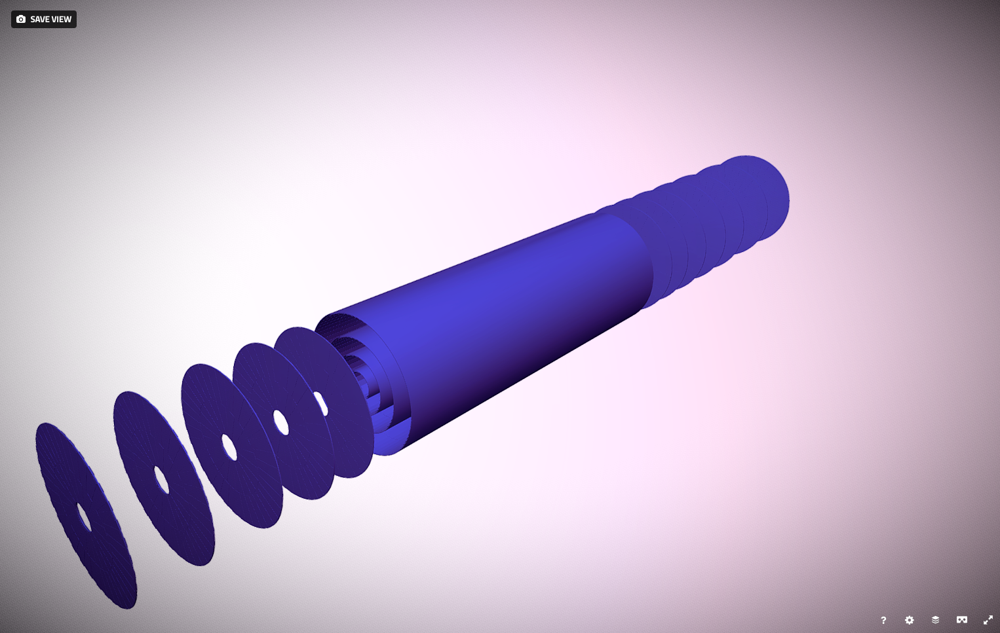
With appropriate input, the ACTFWRootGeometryExample and DD4hepGeometryExample are to be used in a very similar way.
Propagation Example
The PropagationExample again exists for the different geoemtry backends and is based on the Algorithms/PropagationAlgorithm module. It performs random test propagations throught he detector and allows to write them with certain debug information into appropriate writers.
Let us continue with the Generic geometry example, and first inspect he options: next to the geometry building options (--geo-xxx-yyy) there appear options for the magnetic field setup (--bf-xxx-yyy) and for the behaviour of the propagation (--prop-xx-yy).
Running
actstest$ ./ACTFWGenericPropagationExample -n 10 --prop-ntests 10000 --bf-values 0 0 2 --output-root 1
Performs 10 events of each 10000 test propagations through a magnetic field of 2 Tesla in z direction and produces a root output file (by default propagation-steps.root) with the default EigenStepper (Runge-Kutta-Nystrom integration).
Inspecting the root files reveals the detector and its interaction with the runge kutta propagation algorithm, the following pictures shows all steps the stepper has performed, either due to navigation instruction, accuracy control, abort condition and user setting:
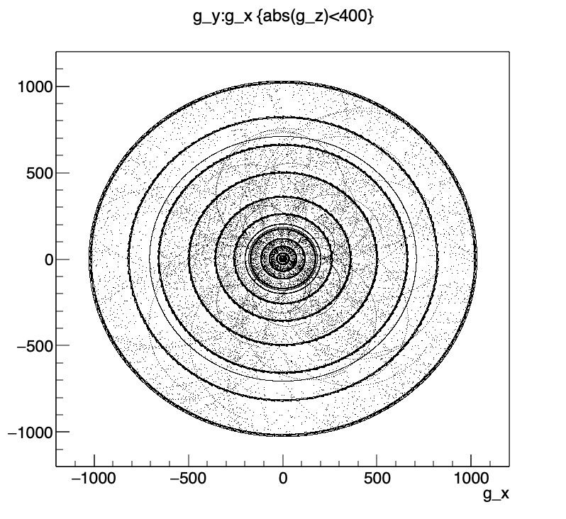
Restricting the steps to only those performed for navigational purposes, shows:
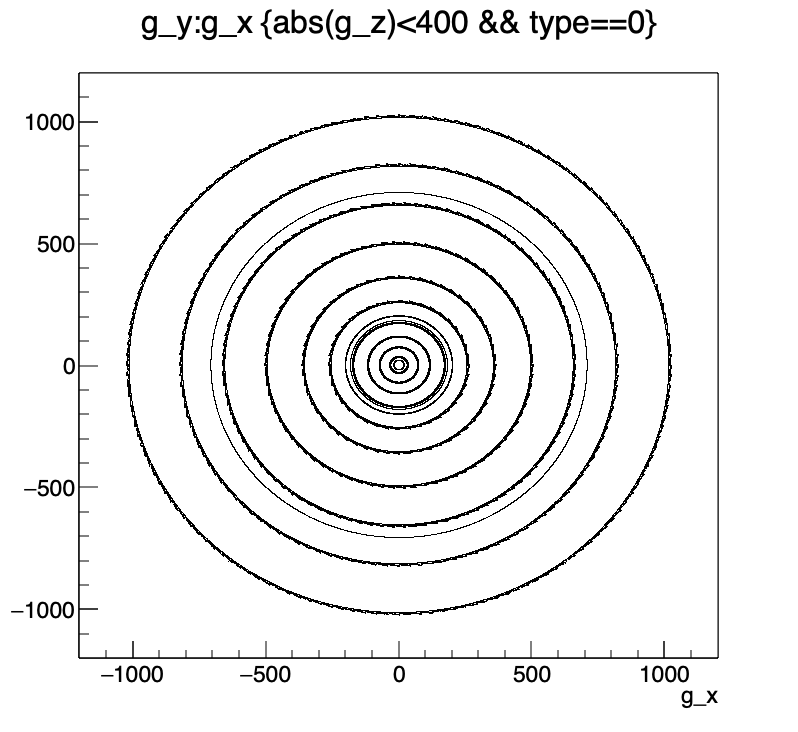
And, furthermore, requiring that sensitive material was hit, reveils:
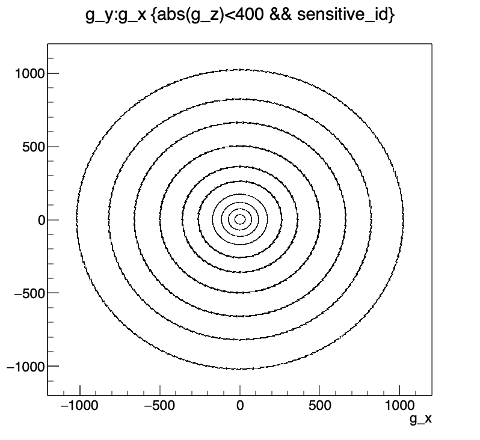
Which leaves the steps that are necessary due to accuracy control to be:
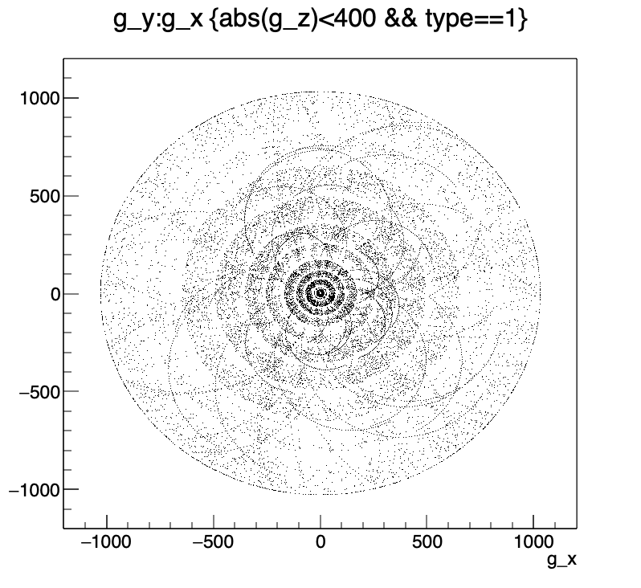
One can clearly see how lower momentum tracks need more steps.
Material Mapping and Material Validation
The Acts toolkit consists of an automated system to map a complex detector geometry onto a more suitable, simplified geometry model for reconstruction.
Material Mapping
The MaterialMapping example demonstrates how to map and project material information from a complex detector geometry onto a set of chosen layers. As an input to the MaterialMapping algorithm a collection of recorded material information is needed.
The input format for the mapper is a collection of MaterialInteraction objects, this is usually generated with Geant4 and an appropriate G4UserAction can be found in the acts-framework/Plugins/Geant4 plugin. Alternatively, the MaterialInteractor of the acts-core module can also write out such a collection.
For the purpose of this example, we use the ad-hoc built material description of the GenericDetector, which has certain material properties on sensitive elements and support structure, such as on the beam pipe and the PST. To create an input collection, one just needs to run the ACTFWGenericMaterialValidationExample and write out the recorded material with the root output option.
./ACTFWGenericMaterialValidationExample -n 1000 --prop-ntests 1000 --prop-energyloss 0 --prop-scattering 0 --prop-record-material 1 --output-root 1
This executes 1000 events with each 1000 straight line tracks using the PropagationAlgorithm with energy loss and scattering switched off, but configured to record material and output a root file (default: propagation-material.root).
Let's inspect the root file, by plotting all position in a central region where material was found
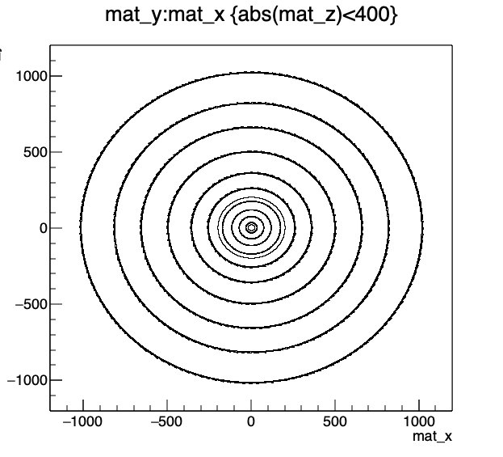
One can clearly see the support structures and the sensitive surface carrying material. We can also look at the total amount of material in this tracker, here shown in thickness in terms of radiation length:
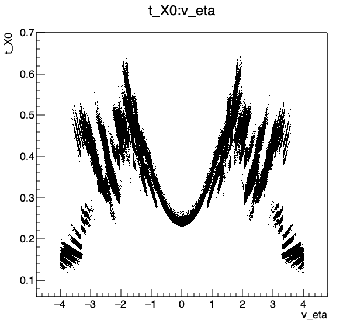
Now, let us use this input file to map it onto a simpler configuration. The generic detector is designed to do so. When chosing the option --geo-material-mode=3, the exact same detector will be built, but instead of a material descriptionb for sensitive surfaces and support structures, only certain layers are loaded with a so called ProtoSurfaceMaterial object, which is a placeholder for the mapping. It consists of a binning prescription, i.e. a directive how granular one wants the maps on this layer to be done.
Let us now run the mapping process with the more complicated input from the GenericDetector and map it onto a few surfaces with a dedicated binning structure.
./ACTFWGenericMaterialMappingExample -n 1000000 --geo-material-mode=3 --output-root 1 --input-root 1 --input-files propagation-material.root
From our prior validation job of 1000 events times 1000 tests we have 1000000 mapping events available.
ATTENTION:
Since the mapping process combines information from all events into a single collection of material maps, this has to be run in single trheaded mode, i.e. with export ACTSFW_NUM_THREADS=1.
At the end of this job, some screen information shows which maps have been produced:
15:18:11 Sequencer INFO Running end-of-run hooks of writers and services
15:18:11 IndexedMater INFO Writing out map at Material_vol5_lay2_app0_sen0
15:18:11 IndexedMater INFO Writing out map at Material_vol7_lay2_app0_sen0
15:18:11 IndexedMater INFO Writing out map at Material_vol7_lay4_app0_sen0
15:18:11 IndexedMater INFO Writing out map at Material_vol7_lay6_app0_sen0
15:18:11 IndexedMater INFO Writing out map at Material_vol7_lay8_app0_sen0
15:18:11 IndexedMater INFO Writing out map at Material_vol7_lay10_app0_sen0
15:18:11 IndexedMater INFO Writing out map at Material_vol7_lay12_app0_sen0
15:18:11 IndexedMater INFO Writing out map at Material_vol7_lay14_app0_sen0
And, in this configuration, a root file containing the maps is produced:
-rw-r--r-- 1 salzburg staff 1430046 Jan 16 15:18 material-maps.root
We can have a look at those maps and even plot them:
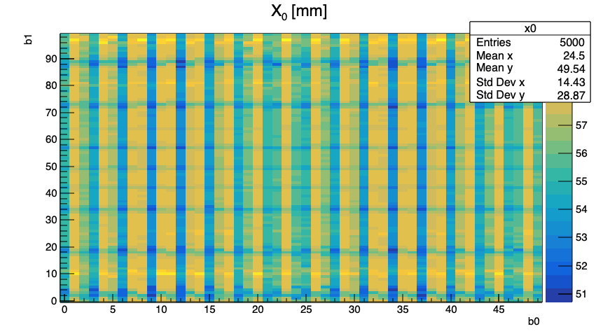
One can see, how the module structure with its overlaps in now projected into one binned material map.
Material Validation
The MaterialValidation example is built upon the PropagationAlgorithm: it runs test propagations and records the material inforamtion in the tracker. If configured with the --root-output 1 option, this iformation is written into a root file. It has already be used in the MaterialMapping example to produce the material information that is then later mapped onto the ProtoSurfaceMaterial to produce the material maps to be loaded.
After having produces such material maps, we can now create the geometry with loaded maps and compare the material budget to the orginal material source.
./ACTFWGenericMaterialValidationExample -n 100 --prop-ntests 1000 --prop-energyloss 0 --prop-scattering 0 --prop-record-material 1 --output-root 1 --geo-material-mode 2 --geo-material-file=material-maps.root
The options --geo-material-mode 2 and --geo-material-file=material-maps.root steer hereby to load the material back from a file and do not construct it ad-hoc.
Let us compare the material recorded with the original detector (black) and the maps (red), first the positions:
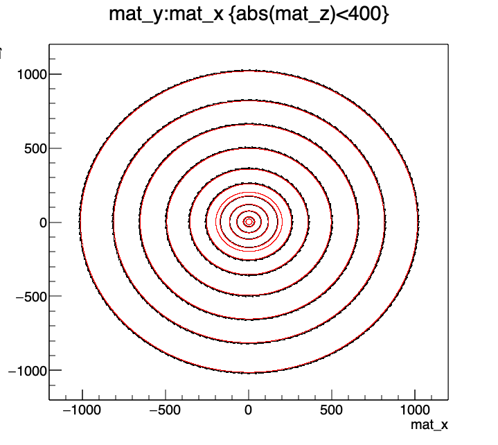 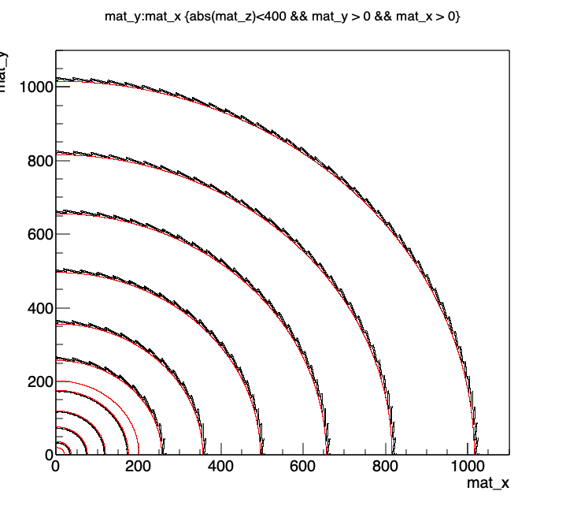
One can perfectly see how the original map was more detailed and complicated and how the maps concentrate the material on simplified surfaces.
However, when comparing the total material budget in the detector, only little compromise has been done and due to the binning structure of the maps, the structure in both pseudorapidity and azimuthal angle is pretty much preserved:
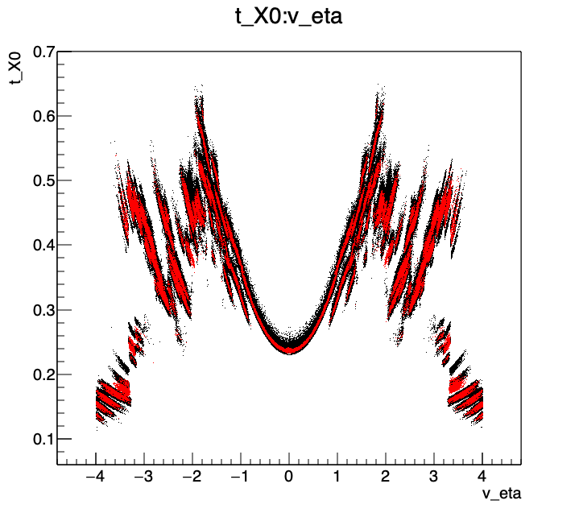 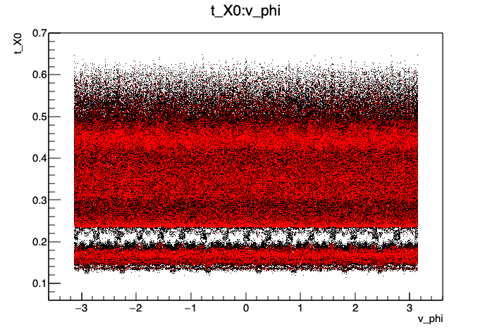
This result can improved by optimising the binning structure.